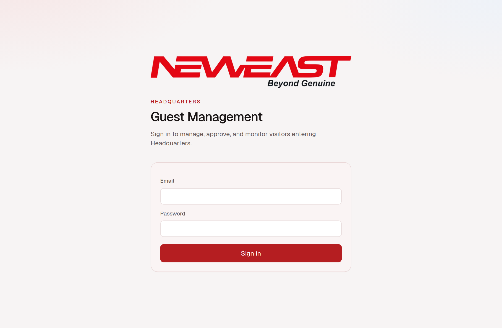
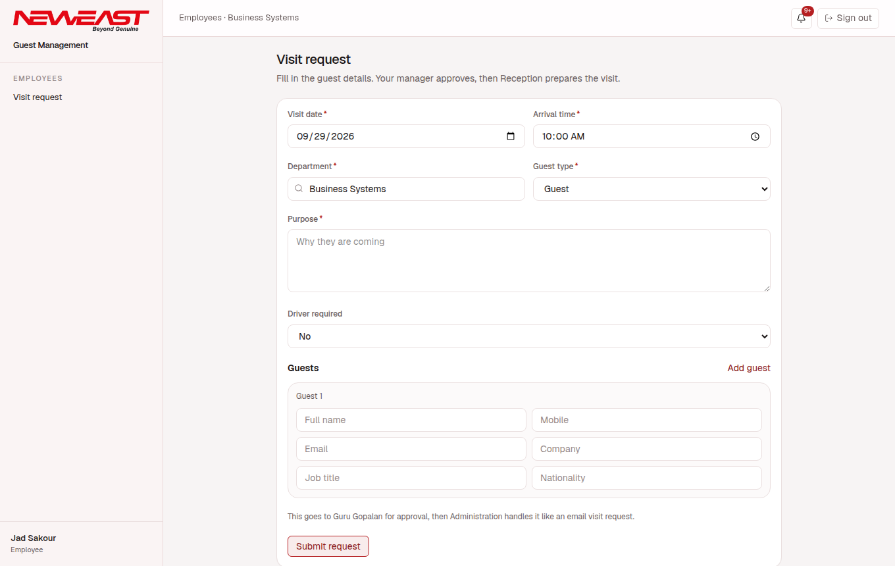
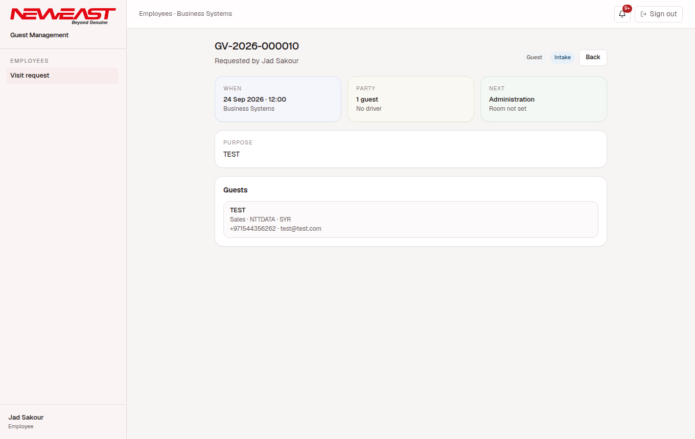
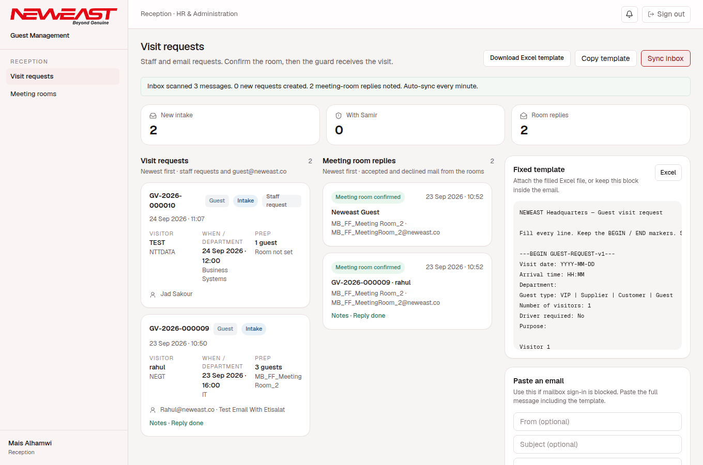
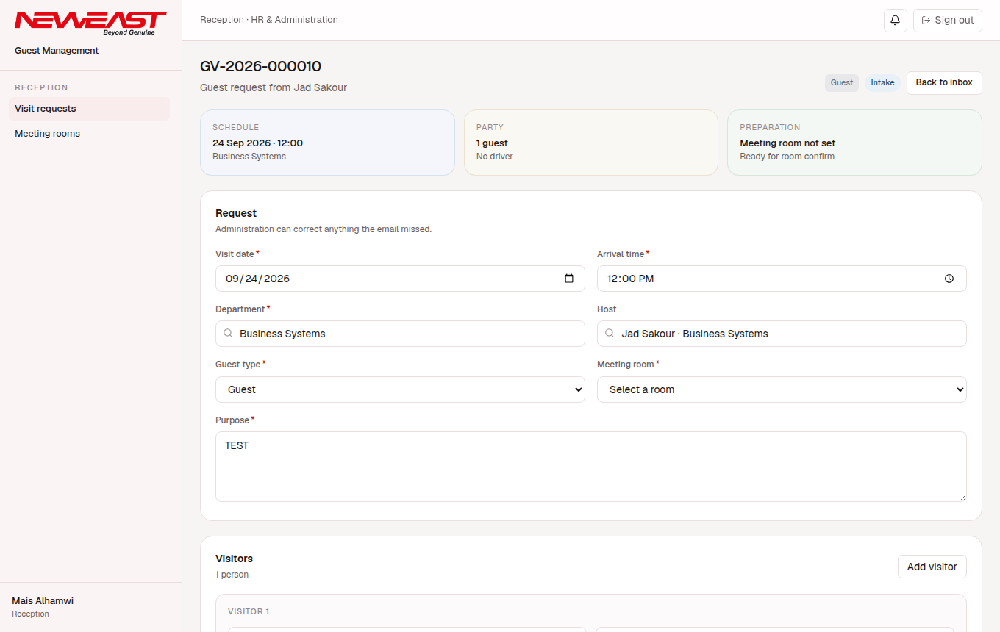
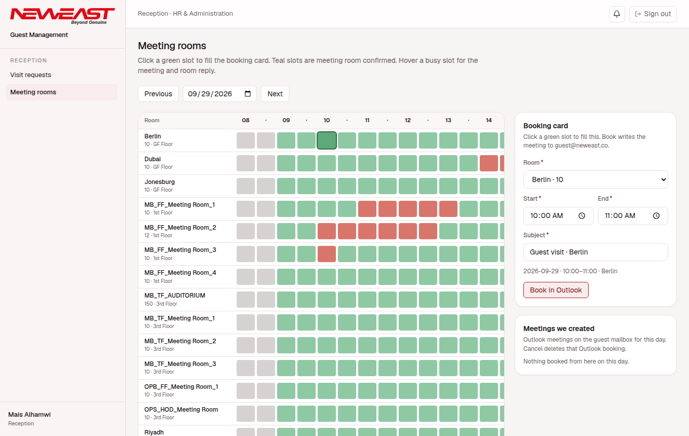
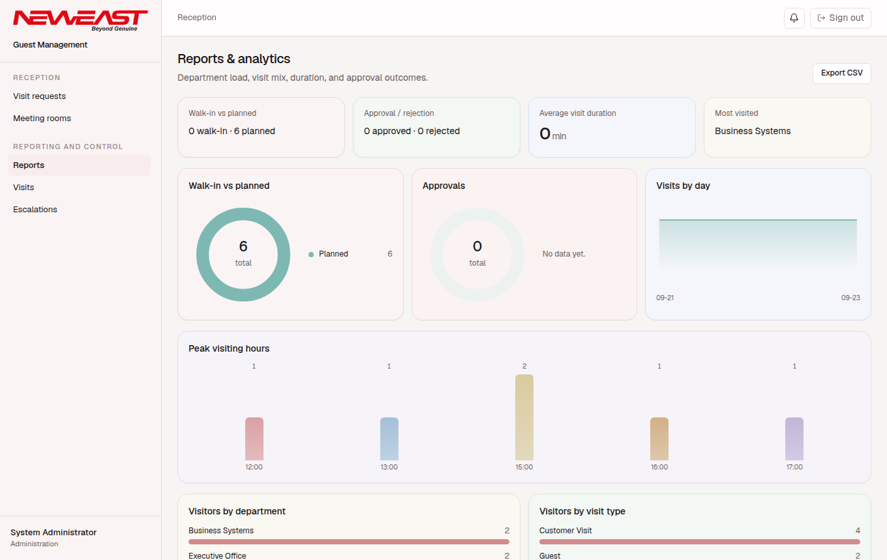
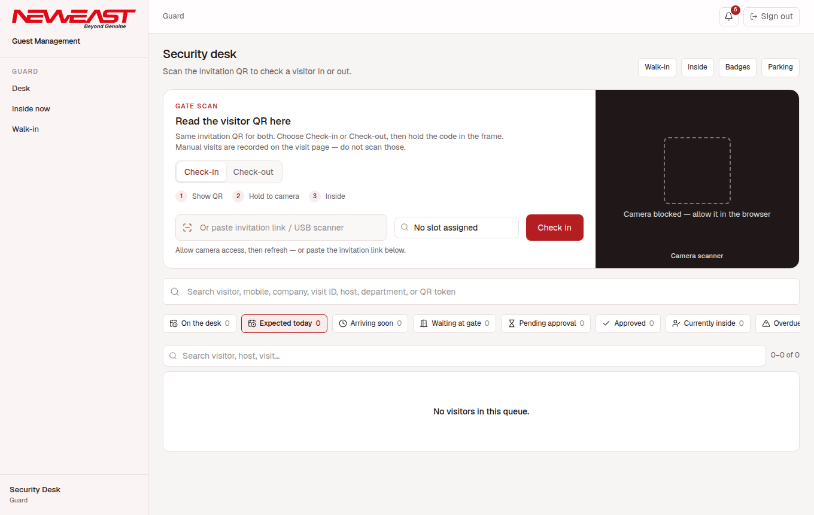
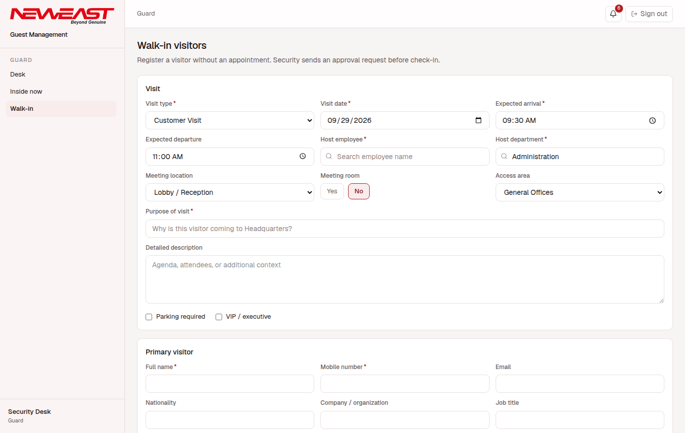

Download PowerPoint Download PDF Watch the walkthrough Open in the browser
NEWEAST Intranet module
Guest Management
A step-by-step process for every department. Sign in, and you only see the desk that belongs to your role.
StartSign in
Open guest.neweast.cloud and use your NEWEAST email and password.

EmployeesAsk for a visit
Your page is Visit request. Fill it the same way you would fill the guest email.
- Choose the date, arrival time, department, and guest type.
- Write why they are coming.
- Say whether a driver is needed.
- Add each guest: name, mobile, email, company, job title, nationality. Use Add guest for another person.
- Submit request.

If you have a line manager, the request goes to them first. If you do not, it goes straight to Reception. Your own requests stay on this page. Open one to see the guests and where it stands.

When Reception confirms the visit, you receive an email and a Teams message with the date, time, room, and guest names.
ManagersApprove, or send your own
Your page is titled Approvals. The form is the same as the employee form, so you can request a room for yourself. That request goes to your own line manager.
When someone on your team is waiting, their card appears at the top under Waiting for your approval. Open it.
- Read the date, department, purpose, and each guest.
- Add a comment if you want one. It is optional.
- Approve sends the request to Reception. Decline closes it.
The employee is told either way, by email and by Teams. Your comment is included.
ReceptionVisit requests
This desk holds staff requests and mail sent to guest@neweast.co. Newest first. Open a card to work on it.

On the right is the email template, if a guest prefers to write in. Copy it, or download the Excel file. The mailbox also syncs on its own.

- Save keeps your edits.
- Confirm books the room in Outlook and tells the employee the visit is set.
- Submit to Security when the guard should expect them.
- Escalation sends a customer request to Samir first. It comes back here after approval.
After the room accepts, guest@neweast.co replies to the original email with the date, the room, and the guests. The request then shows Notes · Reply done.
ReceptionMeeting rooms
Green is free. Click a green slot and the booking card fills in. Check the room and the time, then Book in Outlook. Red is already taken. A red slot we booked shows the visit when you hover it. Grey slots are in the past.

Reporting and controlLook, don’t chase
Reports shows how visits are spread: planned and walk-in, busy hours, departments, and guest types. Export CSV when you need the numbers outside the system.

Visits is the full list, with filters. Escalations is where a customer email waits for a decision before Reception continues.
GuardThe desk
Scan the invitation QR, or paste the invitation link. Choose Check-in or Check-out first. The row of queues is today’s traffic: expected, arriving soon, waiting at the gate, inside, and checked out.

Inside now is who is still in the building. Use it for a headcount.
GuardWalk-in
Someone at the door without an appointment is a walk-in. Name the host, the purpose, and the visitor. The visit needs approval before check-in.
